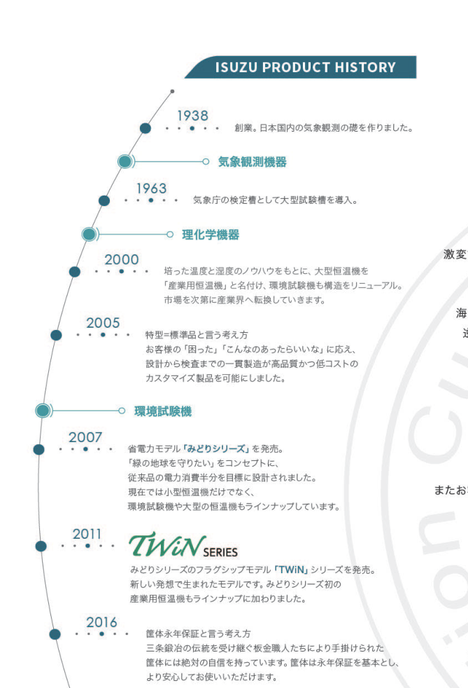
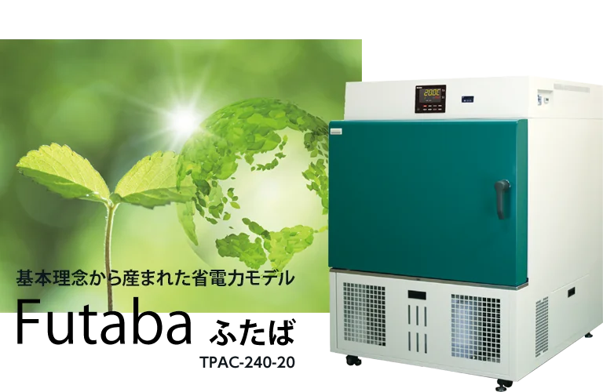
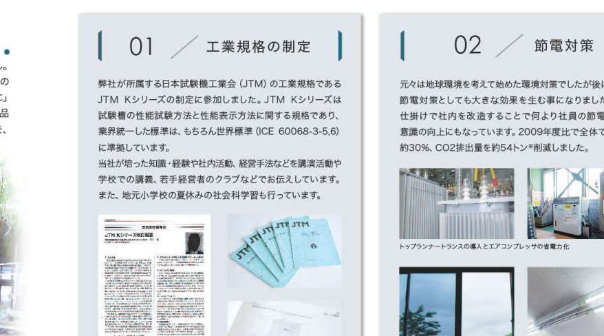

必要な試験空間を選ぶ
大容量の槽が必要な試験もあれば、棚板一枚に収まるサイズの試験もあります。既存公式サイトでは、同じ棚板面積を確保しながら槽の余剰空間を抑え、ヒーター容量を小さくする考え方を紹介しています。試験対象に合った空間を選ぶことは、余分な加熱・冷却を避けるための出発点です。
SUSTAINABILITY / CORPORATE MIND
人に求められる品質と、地球への配慮
いすゞ製作所は、温度・湿度を扱う環境試験機メーカーとして、必要とされる試験性能と使いやすさを追求してきました。同時に、装置が使用するエネルギーや、製造現場の環境負荷にも目を向けてきました。
試験に必要な空間を見極め、性能を支える構造を工夫し、使う人の条件に合わせて一台をつくる。私たちは、こうした日々の技術判断の積み重ねが環境への取り組みにつながると考えています。

01 / OUR ORIGIN
いすゞ製作所の「コーポレートマインド」には、人の役に立つ製品をつくること、限りある資源を大切にすること、そして試験装置を通じて社会のものづくりを支えることが、ひとつの考え方として記されています。
環境への配慮を特別な活動として切り離すのではなく、試験装置の性能、操作性、必要な大きさ、消費電力を考える製品開発の中に位置づけてきました。これは、標準機にも個別仕様のカスタマイズ機にも共通する姿勢です。
2000年頃・2005年の記述は既存公式掲載の開発史、2007年の発売はコーポレートマインドおよび第三者評価資料に基づきます。「現在へ」は取り組み方針を表すもので最新モデルの性能を保証するものではありません。

02 / ENERGY-SAVING PRODUCTS
環境試験装置は、温度や湿度を一定の条件に保つためにエネルギーを使用します。だからこそ、どの条件で、どの大きさの試験空間を必要とするかという検討が重要です。いすゞ製作所は、装置の構造や熱の使い方に工夫を重ねてきました。
大容量の槽が必要な試験もあれば、棚板一枚に収まるサイズの試験もあります。既存公式サイトでは、同じ棚板面積を確保しながら槽の余剰空間を抑え、ヒーター容量を小さくする考え方を紹介しています。試験対象に合った空間を選ぶことは、余分な加熱・冷却を避けるための出発点です。
既存の省電力モデル紹介では、三重の断熱構造によって外部へ逃げる熱を抑え、周囲の空調負荷も含めた電力量の削減につなげる設計思想が説明されています。構造を通じてエネルギーを有効に使う、いすゞ製作所の取り組みの一例です。
装置のヒーター容量を抑えることは省電力設計の重要な要素ですが、定格容量がそのまま実際の消費電力量を表すわけではありません。温度・湿度設定、運転時間、周囲条件、試験物の量なども踏まえ、実運転の条件に即して製品を比較する必要があります。

MIDORI SERIES / SINCE 2007
「みどりシリーズ」は、2007年に発売された省電力製品群です。既存公式サイトでは、試験に必要な空間を見直し、ヒーター容量や断熱構造を工夫することで、性能と省エネルギーを両立させる考え方を示しています。
旧公式には電気料金の削減率を示す比較例もあります。ただし、当時の機種・試験条件・電気料金単価によって結果が変わるため、このページでは旧数値を現行モデルの一般性能として表示しません。
TECHNOLOGY / FROM THE ORIGINAL SITE
省電力モデルの開発で重視してきたのは、試験に必要な空間を見極め、むだな加熱・冷却を抑えることです。既存公式サイトで紹介してきた技術の考え方を、ここにまとめて引き継ぎます。
環境試験に必要な容積は、試験物のサイズと数量によって変わりますことで、導入後資料では、大型・大量の試験には408Lや800Lなどの大容量機が不可欠である一方、棚板1枚で収まる試験では、余剰空間を減らした機種を選ぶ考え方を紹介しています。
例えば旧掲載例では、TPCS-408-40とTPCC-240-40の棚板面積はともに800×600mmと説明されています。棚板面積を確保しながら装置内容積を見直すことで、加熱対象の空間と必要なヒーター容量を抑える設計です。
旧公式資料には、従来機VTR-111と「わかば」VTEC-18の棚板内寸がともにW300×D300mmである比較例があります。この事例ではヒーター定格容量を800Wから400Wへ見直し、温度上昇性能を維持したと説明されています。
ただし400Wはヒーターの容量を表す数値です。実際の消費電力量（kWh）がすべての運転条件で半分になることを意味するものではありません。
風の通り道となる風洞や断熱構造を改善し、試験槽の内外で熱が逃げにくい構造を検討してきました。旧公式サイトでは、低温恒温恒湿試験機「ふたば」に、断熱・保温特性を考慮した厚さ100mmの三重構造を採用した事例が紹介されています。
熱損失を抑えることでヒーターの必要容量を小さくし、装置の運転電力や周囲の空調負荷の抑制を目指す技術的な取り組みです。
ARCHIVE / HISTORICAL PRODUCT COMPARISON
旧公式掲載のVTR-111とVTEC-18の比較。実際の消費電力量を示すデータではありません。
掲載した機種・数値は旧公式サイトの歴史的な比較事例です。現行機種の仕様、試験条件、エネルギー削減率を保証するものではありません。購入・選定時には、現行カタログおよび個別条件に基づく確認が必要です。
旧公式サイトでは、温度85℃・湿度85%の試験条件、当時の電力単価（18円/kWh）などを使用した電気料金比較が掲載されていました。電力単価、稼働時間、温湿度設定、周囲環境、機種によって結果が変動するため、過去の削減率・金額を現在の全機種に共通する効果としては掲載しません。
このページでは、過去の技術開発で何を改善したかを説明します。現行製品の性能比較は、確認済みの試験条件・測定データが揃った時点で追加します。
03 / CUSTOM SOLUTIONS & LONG LIFE
いすゞ製作所のコーポレートマインドは、お客様ごとの要望に応えるカスタマイズを、ものづくりの大切な役割として位置づけています。標準品だけでは実現できない試験条件や設置条件があるとき、必要な性能を整理するところから装置づくりを考えます。
試験に使う空間、温度・湿度の範囲、処理したい試験物、装置の使い方などを具体的にすることで、過不足のない装置の検討につながります。消費エネルギーや運用負荷も、仕様を考える際の検討項目のひとつです。
また、導入した装置を使い続けるためには、適切な運用とメンテナンスが欠かせません。取扱説明書へのアクセスや修理相談などのサポート情報を整え、製品の継続利用を支えます。なお、修理による削減効果や装置寿命の延長年数を定量的に保証するものではありません。

※相談時の整理例であり、正式なヒアリングシートの確定項目ではありません。
04 / RESPONSIBLE OPERATIONS
環境に配慮した装置をつくる一方で、その製造工程や日常の事業活動で使用するエネルギーも見直してきました。2021年のコーポレートマインドには、工場設備や建物を対象とした節電対策が紹介されています。
工場内の設備をより効率の高い変圧器へ更新する取り組みを紹介しています。
工場で使用する圧縮空気設備の電力消費を抑える対策を取り上げています。
窓への遮熱対策などにより、建物内の空調負荷を抑える工夫を記録しています。
工場や事務所の照明に関する省エネルギー対策を進めてきました。
2021年版のコーポレートマインドには、2009年度比の電力使用量およそ30％削減、CO₂排出量およそ54トン削減という過去の取り組みが記録されています。これらは当時の資料に掲載された歴史的な実績であり、現在の排出量や削減率を示すものではありません。
比較対象期間・算定範囲・換算係数については最新資料と照合してから対外公表文言を確定してください。

05 / CLIMATE TARGETS
製造現場の改善を一過性で終わらせず、いすゞ製作所はCO₂排出量の削減について指標と中長期目標を設定しています。2024年7月31日付の第三者評価資料では、2023年9月期を基準に、2033年9月期までの「売上あたりCO₂排出量（Scope1・2）」を減らす目標が示されています。
2023年9月期比／売上あたりCO₂排出量（Scope1・2）
この指標は、事業活動で発生する直接排出（Scope1）と、購入した電力などに伴う間接排出（Scope2）の合計を、売上高で割ったものです。売上あたりの排出量を減らす目標であり、CO₂排出総量を42％削減する目標と同義ではありません。
第三者評価資料は、SBTの基準を参考に削減目標が設計されたと説明していますが、その記述だけでSBTiの正式認定取得を意味するものではありません。認定取得の表記は、正式な証明資料が確認されるまで使用しません。
出典：第四北越リサーチ＆コンサルティング株式会社、2024年7月31日付「SDGsリンク・ファイナンス セカンドオピニオン」。掲載値は公表済みの基準と目標であり、2024〜2026年の実績・達成を示すものではありません。
製品開発と製造現場の取り組みを、このページの本文で紹介しました。考え方や目標の出典となる公開資料は、必要に応じて原本を確認できます。
いすゞ製作所が公表している環境への考え方と、削減目標の根拠となる資料をまとめています。資料には発行時点の情報が含まれるため、数値・活動内容の年代にもご注意ください。
このページでは、製品開発の歴史、2021年のコーポレートマインドに掲載された活動、2024年の第三者評価に記載された削減目標を区別して紹介しています。過去の比較値は現在の製品性能を保証するものではなく、目標値は達成実績とは異なります。
07 / RELATED PRODUCTS & CONTACT
必要な条件がまだ整理できていない段階でも、まずは用途や試験の目的からご相談ください。標準製品の選定から特型・カスタマイズまで、目的に合わせた装置づくりを検討します。